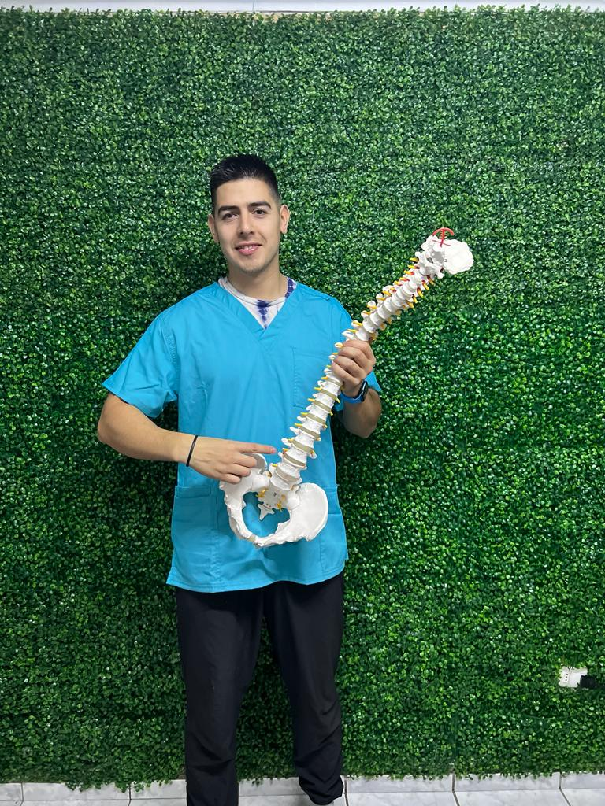
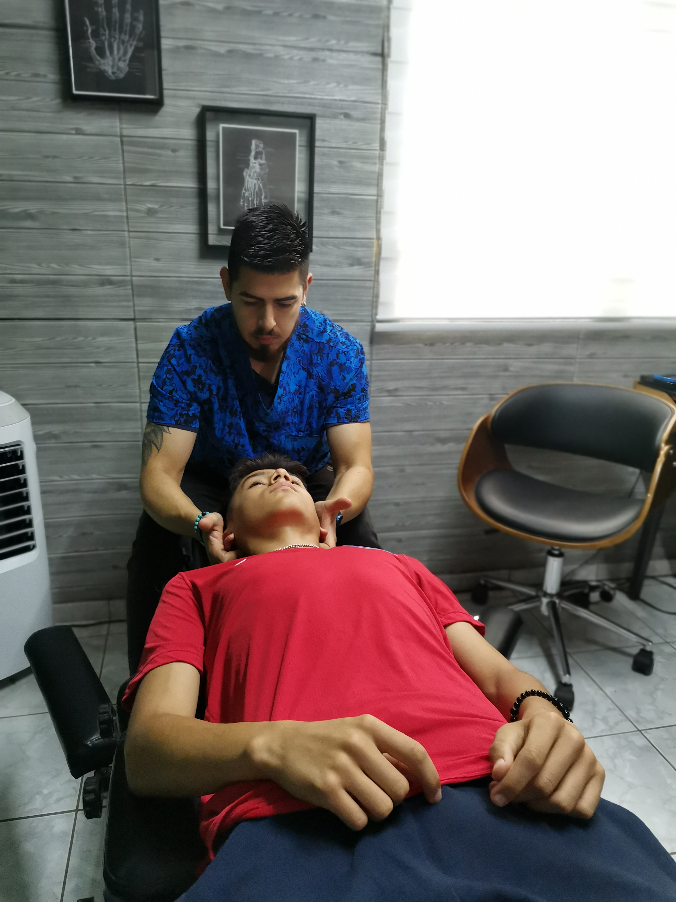

Ya soy cliente
Reserva una nueva sesión o consulta tus próximas atenciones.
Agendar una sesión Consultar mis sesionesUn espacio para acompañarte en la rehabilitación y acondicionamiento. Pronto podrás conocer a nuestro equipo y las terapias disponibles.

Si ya eres cliente, puedes consultar tus sesiones o reservar una nueva atención.
↗Reserva una nueva sesión o consulta tus próximas atenciones.
Agendar una sesión Consultar mis sesionesConoce nuestras consultas y solicita información para coordinar una cita.
Ver consultas y solicitar citaQuiropráctico de la Universidad Católica.

01Describe aquí en qué consiste esta atención, su duración y a quién está dirigida.
Agrega información clara sobre el servicio y qué puede esperar una persona en la sesión.
Reemplaza este texto con los detalles y objetivos del servicio que ofrece el centro.
En computador, usa la rueda del mouse o la barra inferior. En celular, desliza las tarjetas hacia los lados.